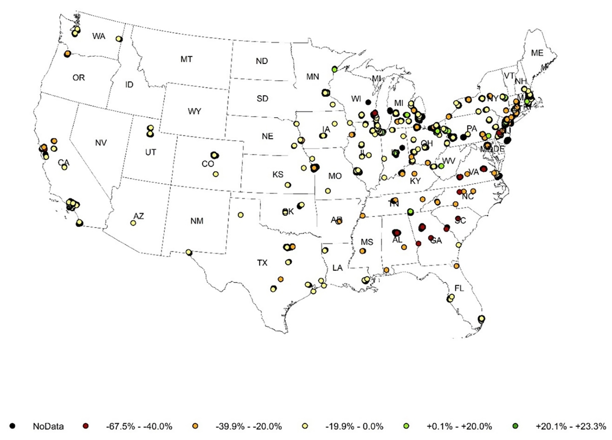

8 Week 9 Diary
9 Week 9: Synthetic Aperture Radar (SAR) and Change Detection
9.1 Summary
This week’s lesson focuses on Synthetic Aperture Radar (SAR) and its application to change detection. This active remote sensing technique is very different from the optical remote sensing I’ve used before: SAR actively emits microwave signals and images by measuring the intensity of the backscatter, so it can penetrate clouds and work around the clock. This reminded me of the analogy my teacher used in class: optical remote sensing is like our eyes, while SAR is more like ‘echolocation’ for bats.
In the course, I learnt that the echo intensity in SAR images is strongly influenced by the texture and structure of the ground. For example, a flat water surface will produce low echo values, while regular vertical structures like urban buildings will produce ‘double reflections’ and show higher echo intensity. At the same time, the polarisation of the SAR, such as VV and VH, determines the echo performance of different features. For example, for the same water surface in calm and windy conditions, the VV polarisation will clearly reflect the change in water surface texture, while the VH will be almost unchanged, and the C-band will be used the most.
Of particular interest to me was the Interferometric Synthetic Aperture Radar (InSAR) technique, which can accurately capture centimetre-level surface displacements through ‘phase’ changes in wavelength. The instructor showed an interferogram of the San Andreas Fault in California, which clearly shows the smallest movements of the ground surface. This technique is not only used in seismic hazard studies, but also to create terrain models with high precision.
Fig. 1 Example of InSAR surface displacement detection through interferogram generation
Source: NASA-ISRO SAR Mission – Interferometry
Finally, we explored the advantages of SAR in change detection. Compared with optical remote sensing, SAR has the characteristics of stable imaging and less influence by light and weather, so it can more accurately capture surface changes before and after disasters. The teacher cited the example of building damage before and after the Ukrainian war, which showed me the prospect of the wide application of SAR in the field of urban management and post-disaster assessment.
9.2 Applications
This week’s study has given me a deeper understanding of the practical application scenarios of Synthetic Aperture Radar (SAR) and InSAR technology. I found that the advantage of SAR is that it is not disturbed by cloud cover and sunlight conditions, which makes it an important application prospect in the fields of urban heat island monitoring and disaster assessment.
In the field of urban planning, urban heat island has always been a key issue plaguing urban development. Monitoring based on traditional optical remote sensing is often affected by cloud cover and weather conditions, with more missing data, whereas SAR can steadily provide all-weather data, an advantage that leads me to believe that SAR data are more suitable for long-term monitoring of the urban heat island effect and its changing trends (MacLachlan et al., 2021). I have further thought about how SAR can assist in analysing historical urban problems, for example, some areas affected by historical inequitable planning (e.g. redlining) tend to show more severe urban heat island phenomena, and environmental health problems are more prominent in these areas. It may be more informative for urban policy making in the future if the high timeliness of SAR can be combined with the long-term tracking of environmental changes in these areas (Wilson, 2020; Li et al., 2022).
Fig. 2 Historical redlining categories across selected Texas cities
Source: Li et al. (2022)
At the same time, I realise that SAR data has an important role to play in identifying and managing urban ecosystems. The uneven distribution of green spaces and ecological services in some regions is usually the result of historical policy influences, and this uneven distribution can further exacerbate socio-economic inequities. I believe that if SAR is used to continuously track urban vegetation and greening, it will help to adjust urban greening policies in a timely manner and improve the ecological environment for residents (Nowak, Ellis and Greenfield, 2022). Moreover, the stability and high resolution characteristics of SAR can ensure that the data are highly reliable.

Fig. 3 Differences in percent tree cover between Class A and Class D neighbourhoods (Class D cover minus Class A cover) across U.S. cities
Source: Nowak et al. (2022)
In terms of disaster response, I have found that SAR is more suitable for quickly and accurately monitoring surface changes after a disaster. Optical imagery is often difficult to provide post-disaster information quickly due to weather conditions, whereas SAR can quickly generate accurate data on surface changes after a disaster. I have learnt that SAR can provide damage assessment in a very short time after earthquakes, floods, and even man-made disasters (e.g. war damage). This not only helps directly in post-disaster rescue operations but also provides important data support for post-disaster reconstruction (Plank, 2014).
9.3 Reflection
This week’s study of SAR and InSAR technologies has made me deeply aware of the diversity of remote sensing tools with unique advantages in practical applications. SAR technology is unaffected by clouds and weather and can provide data steadily around the clock, which is crucial in urban planning, disaster response, and environmental monitoring. The SAR echo characteristics mentioned in the class and the ability of InSAR technology to monitor surface changes with high accuracy have also inspired me to do a lot of future research.
Particularly interesting to me is the ability of InSAR to monitor small surface displacements, such as landslides, land subsidence, or earthquakes-induced surface micro-change. This ability to measure with centimetre-level accuracy is extremely valuable in urban governance and disaster management, making it clearer to me that if I want to study urban geohazards in the future, InSAR will be a powerful tool for me. I am also thinking further about how InSAR technology can be applied to urban infrastructure monitoring, such as long-term monitoring of bridges, elevated roads, or underground pipelines to detect structural risks in advance.
In addition, by reading the literature, I started to think deeply about the integration of remote sensing technology with socio-economic issues. Historical urban red line areas often face problems such as heat island effect and unbalanced ecological services, and SAR’s all-weather observation capability can provide continuous spatial evidence of these socio-economic phenomena. I feel that this interdisciplinary combination of technology and social issues is very valuable and worthy of further exploration in my future research.
I am even considering how to combine SAR and InSAR data with population health and economic development data for joint analyses in future research designs to more comprehensively study environmental justice and social inequality issues.